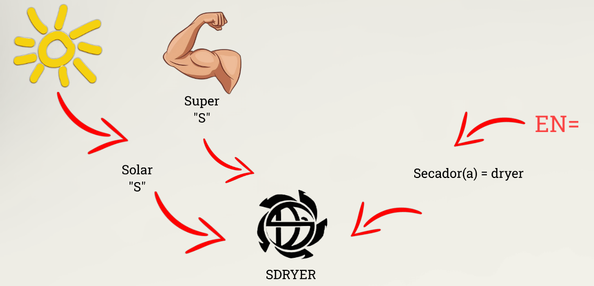

P r o p ó s i t o
El proyecto Sdryer tiene como propósito transformar una tarea de hogar que suele ser tardada e incómoda en aquellos lugares donde no se cuenta con el espacio suficiente para el secado de prendas. Ejemplos: apartamentos, casas rodantes, habitaciones, etc; ya sea por políticas de propiedad (con las cuales betan los espacios de ventanas para estas actividades), o por simple falta de ventilación.
- En la antigüedad sin la automatización de procesos como el lavado de prendas era tardado y conllevaba un esfuerzo y tiempo en actividad considerable.
Como desarrolladores del proyecto deseamos que nuestros usuarios dispongan de más tiempo para realizar otro tipo de actividades que ellos vean convenientes, es por eso que surgió la idea de integrar un aplicativo de control a la máquina, de modo que el usuario programa la intensidad, temperatura y duración de secado.
¿P o rㅤq u éㅤS d r y e r?
1. Nuestro nombre
borrador
+ Se planea que Sdryer sea alimentado a través de energías renovables, ¡como la energía solar!.
+ Si te fijas "dryer" proviene del idioma inglés y significa secador(a).
borrador
¿P o rㅤq u éㅤS d r y e r?
2. Nuestro logo
borrador

borrador
borrador
I n t e g r a n t e s
borrador
Est. Tec. Automatización industrial
Alejandro Ibáñez - Jaider García - Edwin Martínez
Somos un grupo de 3 alumnos del programa TAI
Est. Tec. Desarrollo de software
Cristián Muñoz
Contamos con 1 integrante del programa TDS
borrador